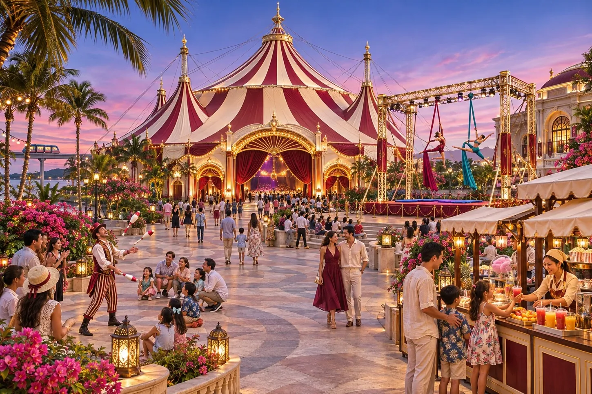
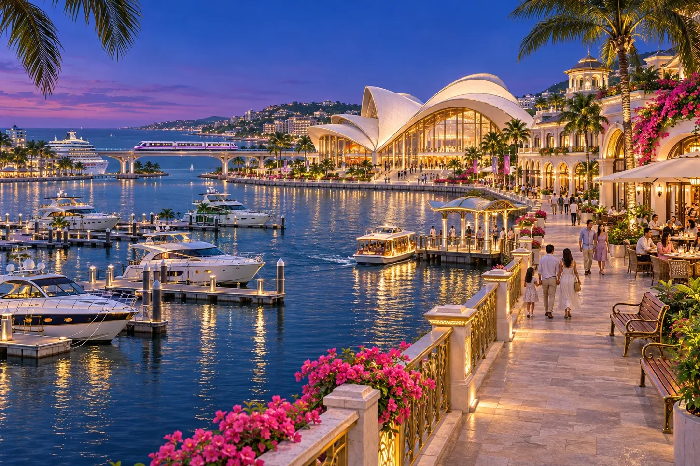
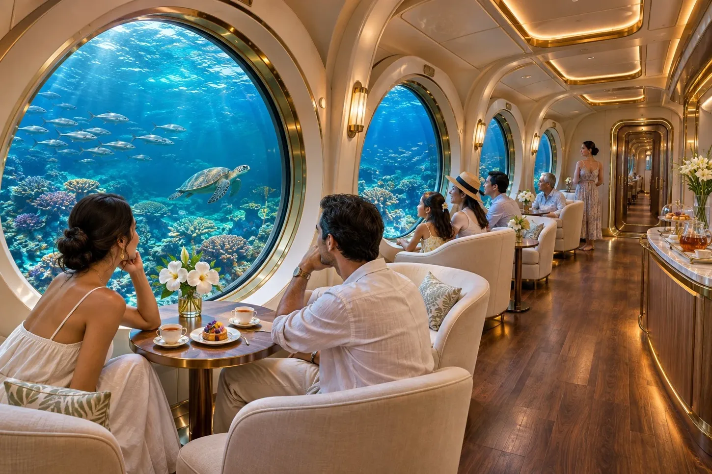

SOUTH BEACH
南ビーチ
長い白砂浜と海沿いの公開遊歩道。駅を降りてすぐに砂浜が始まるわけではないので、海までの移動も見込んで訪れるのがおすすめです。
行き方：南ビーチ駅｜パレス中央から列車で約13分（南西ゲート乗換・待ち時間別）。駅から砂浜へは約1km
SOUTH / EDEN ISLAND
白い砂浜から、夜の港へ。 南の海岸を歩き、南東のパール湾へ。日暮れに合わせて、砂浜から水辺の劇場へ足を延ばせます。
THINGS TO DO
SOUTH BEACH
長い白砂浜と海沿いの公開遊歩道。駅を降りてすぐに砂浜が始まるわけではないので、海までの移動も見込んで訪れるのがおすすめです。
行き方：南ビーチ駅｜パレス中央から列車で約13分（南西ゲート乗換・待ち時間別）。駅から砂浜へは約1km

SKY CARNIVAL
地上の曲芸と空中演出が見どころ。空の色が変わる夕方から夜にかけて、会場の表情も変わります。開演時刻は本試作に掲載していません。
行き方：南東・パール湾方面

WATERFRONT PROMENADE
パール湾に面した劇場と飲食の街。家族で歩ける水辺の遊歩道と、年齢制限のある区画は動線を分けています。
行き方：南東・パール湾｜パール港方面

OCEAN EXPERIENCE
海中の風景を楽しむ体験。旅客の受付はパール港のマリーナにあります。受付は乗降ドックではなく、航路などの詳細は本試作に掲載していません。
行き方：パール港マリーナ｜旅客受付
交通時間は作中の目安です。記載がない場合、待ち時間・駅から施設への移動は含みません。
KEEP EXPLORING